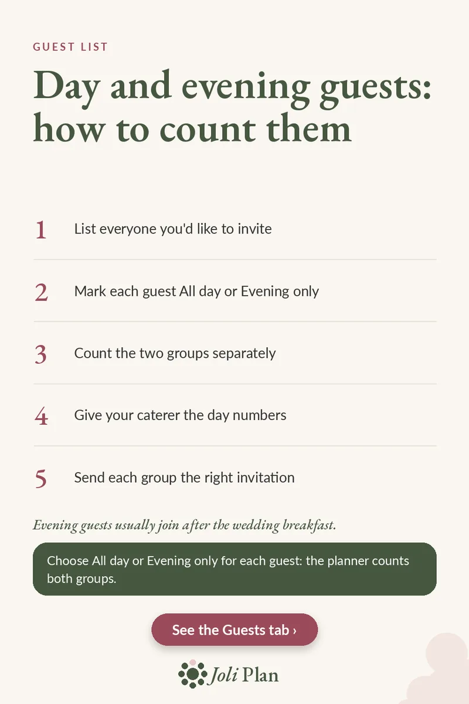

Guests
Day and evening wedding guests: how to count them
Updated on 04/11/2026
Many UK weddings have two groups of guests: those who stay all day and those who join in the evening. Counting them separately keeps the catering numbers right and the invitations clear. Here are five steps.
See the wedding planner on Etsy ›

The 5 steps
- List everyone you'd like to invite. Start with one list, without sorting yet.
- Mark each guest All day or Evening only. One choice per guest, written in the same place.
- Count the two groups separately. You need two totals, not one.
- Give your caterer the day numbers. Evening guests usually join after the wedding breakfast.
- Send each group the right invitation. Day guests and evening guests need different details.
Why two totals
The day guests are the ones sitting down for the wedding breakfast, so they set the number of covers. The evening guests join after it, so they should not be added to that figure.
Keeping both counts from the same list means a change, such as a guest moving from evening to all day, is easy to reflect in both totals.
Keep the list up to date
Mark each reply as it arrives and recount the day group before you confirm numbers with your caterer.
Frequently asked questions
Who counts towards the catering numbers?
The day guests. Evening guests usually join after the wedding breakfast, so they are counted separately.
How do I keep both counts right?
Keep one guest list, mark each guest All day or Evening only, and count the two groups separately.